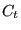
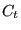
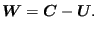

Next: In/Out Up: Fluid Section Types: Gases Previous: Möhring Contents
Sometimes it is more convenient to work in a relative system fixed to some rotating device, e.g. to model the flow through holes in a rotating disk. In order to facilitate this, two conversion elements were created: a relative-to-absolute element and an absolute-to-relative element. The transformation takes place at a given radius and the element has a physical length of zero. Input for this element is the circumferential velocity of the rotating device and the tangential gas velocity , both at the radius at which the transformation is to take place. The gas velocity can be specified explicitly, or by referring to an element immediately preceding the transformation location and imparting a specific swirl to the gas.
Let
 be the circumferential velocity of the rotating device at
the selected radius,
be the circumferential velocity of the rotating device at
the selected radius,
 the velocity of the gas at the same
location and  its circumferential component (Figure 113). The velocity of the gas
the velocity of the gas at the same
location and  its circumferential component (Figure 113). The velocity of the gas
 in
the rotating system satisfies:
in
the rotating system satisfies:
|  | (139) |
The total temperature in the absolute system is
 |
(140) |
whereas in the relative system it amounts to
 |
(141) |
Combining these equations and using the relationship between the length of the sides of an irregular triangle (cosine rule) one arrives at:
 |
(142) |
Assuming adiabatic conditions this leads for the pressure to:
 |
(143) |
Depending on the size of  compared to the size of
compared to the size of  the relative
total temperature will exceed the absolute total temperature or vice
versa. This is illustrated in Figure 114.
the relative
total temperature will exceed the absolute total temperature or vice
versa. This is illustrated in Figure 114.
Inversely, the relationships for the relative-to-absolute transformation amount to:
 |
(144) |
and:
 |
(145) |
These relationships are taken into account in the following way: the change in total temperature is taken care of by creating a heat inflow at the downstream node. For an absolute-to-relative change this heat flow amounts to:
 |
(146) |
The total pressure change is taken as element equation. For an absolute-to-relative change it runs:
 |
(147) |
and for a relative-to-absolute change:
 |
(148) |
For an absolute-to-relative element the input is as follows (to be specified in that order on the line beneath the *FLUID SECTION, TYPE=ABSOLUTE TO RELATIVE card):
is taken if and only if  . In all other cases the exit velocity of
the element with label
. In all other cases the exit velocity of
the element with label  is taken.
is taken.
For an relative-to-absolute element the input is identical except that the type of the element is now RELATIVE TO ABSOLUTE.
Example files: moehring, vortex1, vortex2, vortex3.